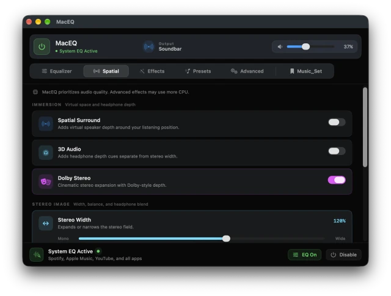
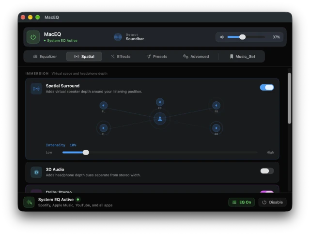
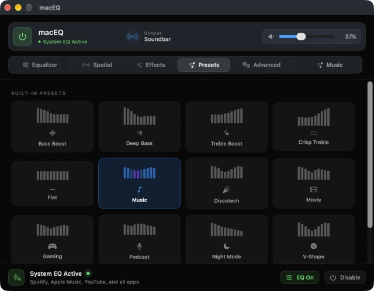
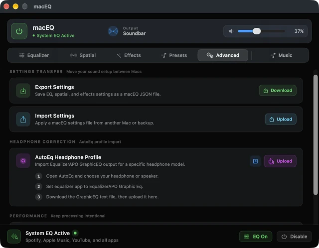

EqualizerTen bands, a live curve and a live spectrum.

SpatialWider, deeper and easier on the ears.

SurroundFive virtual speakers around you.

PresetsThirteen sounds, one tap away.

AdvancedYour settings, wherever you go.
Features.
Every app, at once. — one EQ for the whole system, on speakers, AirPods and Bluetooth.
10-band EQ — 32 Hz to 16 kHz, with a live curve and a live spectrum as you play.
Spatial sound — virtual 5-speaker surround, stereo width and crossfeed for headphones.
13 presets — from Bass Boost to Podcast, plus your own. One tap brings it all back.
AutoEq profiles — import a correction curve made for your exact headphones.
And so much more.
Menu bar app
Extra Bass
Clarity
Enhanced stereo
Auto level
Volume boost to 200%
Left/right balance
Night mode
Ambience
Fidelity
Pitch shift
Export and import settings
Low CPU mode
Analyzer on or off
Ready in 3 steps.
Turn it on. Open macEQ and switch on System EQ from the bottom bar.
Shape your sound. Pick a preset, or drag the ten bands yourself.
Keep it. Save it as your own preset and bring it back with one tap.
What people are saying.
“I wanted a little more low end from my AirPods without sending my whole setup through some complicated audio app. macEQ took about a minute to set up and I forget it's even there.”
— Daniel M., MacBook Pro User
“It feels fast and thoughtful. The presets are useful, but the real win is how easy it is to fine tune without turning the whole system into a mixer.”
— Priya S., Podcast Producer
“I wanted a cleaner listening profile for my headphones and this does it without messing with my whole setup. It just works, and it stays out of the way.”